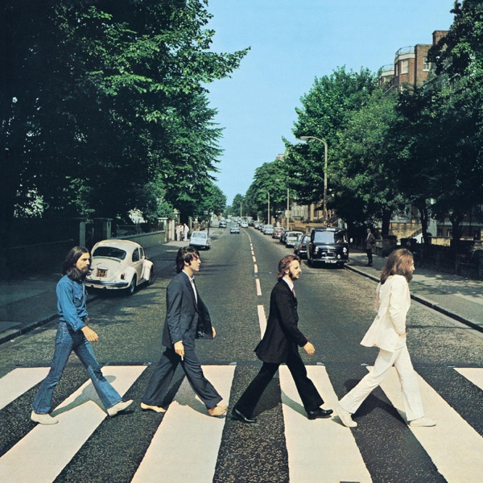

Abbey Road
The Beatles
- Original release
- 1969
- Pressing year
- 2021
- Country
- US
- Format
- Vinyl LP, Album, Reissue, Repress, Stereo (GZ Media Pressing, Anniversary Edition)
- Label / Cat#
- Apple Records – B0030719-01 / Capitol Records – B0030719-01 / UMe – B0030719-01
- Genres
- Rock
- Styles
- Pop Rock
- Discogs release
- 23630855
- Discogs master
- 24047
- Apple Music
- Abbey Road (2019 Mix)
- Wikipedia
- Abbey Road
Production notes
Tracklist (Discogs)
| A1 | Come Together | 4:21 |
| A2 | Something | 3:03 |
| A3 | Maxwell's Silver Hammer | 3:27 |
| A4 | Oh! Darling | 3:27 |
| A5 | Octopus's Garden | 2:51 |
| A6 | I Want You (She's So Heavy) | 7:47 |
| B1 | Here Comes The Sun | 3:05 |
| B2 | Because | 2:46 |
| B3 | You Never Give Me Your Money | 4:02 |
| B4 | Sun King | 2:27 |
| B5 | Mean Mr. Mustard | 1:06 |
| B6 | Polythene Pam | 1:13 |
| B7 | She Came In Through The Bathroom Window | 1:57 |
| B8 | Golden Slumbers | 1:32 |
| B9 | Carry That Weight | 1:37 |
| B10 | The End | 2:20 |
| B11 | Her Majesty | 0:23 |
Tracklist (Apple Music)
| 1 | Come Together (2019 Mix) | 4:20 |
| 2 | Something (2019 Mix) | 3:02 |
| 3 | Maxwell's Silver Hammer (2019 Mix) | 3:27 |
| 4 | Oh! Darling (2019 Mix) | 3:27 |
| 5 | Octopus's Garden (2019 Mix) | 2:50 |
| 6 | I Want You (She's So Heavy) [2019 Mix] | 7:47 |
| 7 | Here Comes the Sun (2019 Mix) | 3:05 |
| 8 | Because (2019 Mix) | 2:45 |
| 9 | You Never Give Me Your Money (2019 Mix) | 4:02 |
| 10 | Sun King (2019 Mix) | 2:26 |
| 11 | Mean Mr. Mustard (2019 Mix) | 1:06 |
| 12 | Polythene Pam (2019 Mix) | 1:12 |
| 13 | She Came In Through the Bathroom Window (2019 Mix) | 1:58 |
| 14 | Golden Slumbers (2019 Mix) | 1:31 |
| 15 | Carry That Weight (2019 Mix) | 1:36 |
| 16 | The End (2019 Mix) | 2:21 |
| 17 | Her Majesty (2019 Mix) | 0:25 |
Personnel & credits
- Miles Showell — Lacquer Cut By
- Giles Martin — Mixed By
- Sam OKell — Mixed By
- Iain MacMillan — Photography By [Photographs By]
- George Martin — Producer
Identifiers
- Barcode: 6 02577 91512 3 (Text)
- Matrix / Runout: B0030719-01 A (Side A label)
- Matrix / Runout: B0030719-01 B (Side B label)
- Matrix / Runout: MILES ABBEY ROAD 1/2 SPEED.ROOM 30 214816E1 1181856 7791512-A (Side A runout (Variant 1))
- Matrix / Runout: MILES ABBEY ROAD 1/2 SPEED.ROOM 30. 214816E2 1183714 7791512-B (Side B runout (Variant 1))
- Matrix / Runout: MILES ABBEY ROAD 1/2 SPEED.ROOM 30 214816E1 1336568 7791512-A (Side A runout (Variant 2))
- Matrix / Runout: MILES ABBEY ROAD 1/2 SPEED.ROOM 30. 214816E2 1339580 7791512-B (Side B runout (Variant 2))
- Matrix / Runout: MILES ABBEY ROAD 1/2 SPEED.ROOM 30 214816E1 1215668 7791512-A (Side A runout (Variant 3))
- Matrix / Runout: MILES ABBEY ROAD 1/2 SPEED.ROOM 30. 214816E2 1215666 7791512-B (Side B runout (Variant 3))
- Matrix / Runout: MILES ABBEY ROAD 1/2 SPEED.ROOM 30 214816E1 1215668 7791512-A (Side A runout (Variant 4))
- Matrix / Runout: MILES ABBEY ROAD 1/2 SPEED.ROOM 30. 214816E2 11196289 7791512-B (Side B runout (Variant 4))
- Matrix / Runout: MILES ABBEY ROAD 1/2 SPEED.ROOM 30 214816E1 835689 7791512-A (Side A runout (Variant 5))
- Matrix / Runout: MILES ABBEY ROAD 1/2 SPEED.ROOM 30. 214816E2 1039716 7791512-B (Side B runout (Variant 5))
Notes
GZ Media repress of the 50th Anniversary remix. 180 gram vinyl.
New mix by Giles Martin and Sam OKell.
Back cover:
"An E.M.I. recording. Thanks to George Martin, Geoff Emerick and Phillip McDonald."
B11 not listed on cover or label (to mimic the very first pressings of this title).
There are three record company logos on the hype sticker (Apple, Capitol, UMe). The Capitol and UMe logos appear on the hype sticker only, and are not printed anywhere else on the cover or labels.
Notes & discrepancies
- Release year differs: your pressing=2021, Apple Music edition=1969. Apple Music typically streams the most recent remaster.
Recorded in the summer of 1969, Abbey Road is the eleventh studio album by The Beatles and the final album they recorded together as a group (though Let It Be was released later in 1970). It represents the peak of their studio craftsmanship under producer George Martin, recorded on a new solid-state TG12345 mixing console which gave the album a warmer, smoother, and more modern low-end sound than their previous 8-track recordings.
Side 1 features legendary individual songwriting achievements, including John Lennon’s heavy blues-rock “Come Together,” George Harrison’s breakthrough masterpiece “Something,” and Paul McCartney’s intense vocal showcase “Oh! Darling.” Side 2 is defined by the famous 16-minute medley—a series of short, unfinished songs woven together by McCartney and producer George Martin into a cohesive suite, culminating in “The End” and the unlisted snippet “Her Majesty.”
This 2019 50th Anniversary release features a new stereo mix by Giles Martin (George Martin’s son) and Sam Okell, sourced directly from the original eight-track session tapes. The remastering and lacquer cutting were performed by Miles Showell at Abbey Road Studios using half-speed mastering, which provides improved high-frequency response and stereo definition.
About this 2021 US pressing (1×LP, Reissue, Repress, Remastered, Stereo, 180g): Apple Records/Capitol Records/UMe catalog
B0030719-01(with Side A label carryingB0030719-01A). This is a repress manufactured at GZ Media in the Czech Republic, using the same half-speed master metalwork cut by Miles Showell at Abbey Road Studios. It is identified by the GZ Media job stamps (214816E/214818E), the European set number7791512etched in the runout, and GZ-specific pressing/job codes (like2211919on Side A and02218420on Side B).Pressed on 180g vinyl and housed in a faithful reproduction of the original gatefold sleeve, the album features the iconic cover photo of the band walking across the zebra crossing outside Abbey Road Studios. It includes a printed inner sleeve with lyrics and credits.